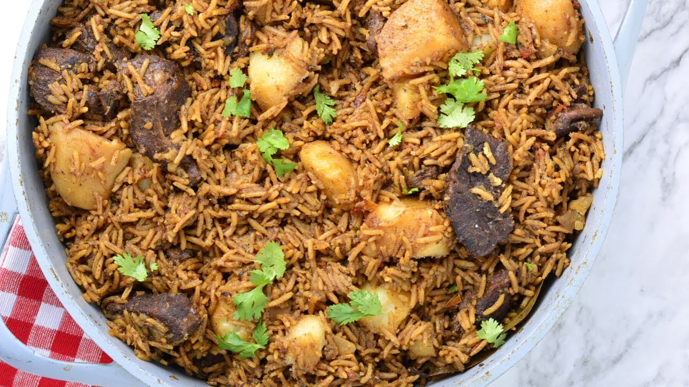

East African Pilau is a traditional, beautiful fragrant rice dish made with many aromatic spices that adds an amazing depth of flavor to the rice. It can be made with either beef or chicken.
Ingredients
Pilau Masala - Pilau Spices
- 1 Teaspoon Cloves
- 2 Tablespoon Cumin Seeds
- 1/2 Tablespoon Black Peppercorn
- 12 Cardamon Pods
- 1 Cinnamon Stick
Rice Pilau
- 2 Cups Basmati Rice
- 5 Medium Potatoes
- 1/4 Cups Vegetable Oil
- 2 Red Onions
- 4 Minced Garlic Cloves
- 2 Tablespoons Minced Ginger
- 1 Serrano Pepper Finely Chopped
- 1 Tablespoon Pilau Masala
- 2 Beef Stock Cubes
- 1/4 Cups Freshly Chopped Cilantro
- 1lb Cubed Beef Sirloin
- 3 Roma Tomatoes
- 4 Cups of Water
- 2 Bay Leaves
- Salt to Taste
Steps To Cooking
- Toast and blend the pilau masala: In a medium saucepan over medium heat.
- Brown the onions by frying it in oil until it caramelizes. This should take about 10 to 15 minutes. Stir in the Garlic, ginger and serrano pepper.
- Add the meat stock cubes, pilau masala, cilantro, bay leaves, and salt to taste and brown the meat for about
- Stir in the tomatoes and cook till it dissolves. Then stir in the potatoes.
- Add water and bring everything to a rolling boil and leave the potatoes to cook for about 10 minutes.
- Stir in the rice then cover tightly. You can use an aluminum foil to cover it first, this will help keep the steam in. Then place the lid over it and leave to cook on a low heat for 20 minutes until the liquid has been absorbed.
- Serve hot! You can sprinkle the rice pilaf with some chopped cilantro, then fluff with a fork. Enjoy.
Odin Recipes Homepage